摄像机效果
打开工作室 → 效果。点击效果标题可展开控制项目，打开右侧开关即可应用效果。
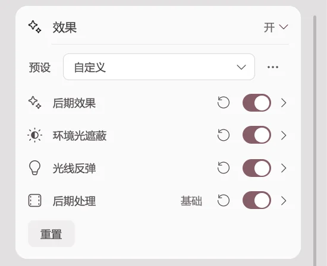
| 效果类别 | 支持的版本 |
|---|---|
| 基础后处理 | Basic、Pro |
| 高级后处理效果 | Pro |
| 环境光遮蔽 | Pro |
辉光与景深同时出现在两组效果中。建议先只开启一组中的一个效果进行比较。标题上的重置图标只恢复当前效果组，底部的重置会还原全部效果。
基础后处理
调整基础画面色彩、亮部辉光与镜头效果。
抗锯齿
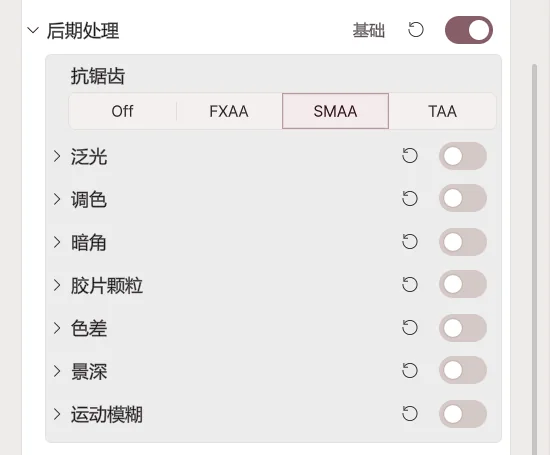
平滑头发、服装边缘出现的锯齿。
| 模式 | 画面效果 |
|---|---|
| Off | 关闭边缘平滑。 |
| FXAA | 性能开销较低，但细小纹理可能略显模糊。 |
| SMAA | 在保持更多细节的同时改善轮廓。 |
| TAA | 通过时间采样使画面稳定，但运动物体可能产生残影。 |
辉光
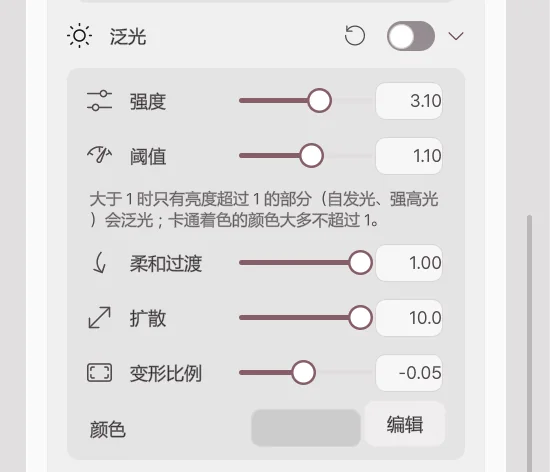
让亮色头发和发光装饰周围出现光晕。
| 调整 | 数值增大时 |
|---|---|
| 强度 | 光晕更加明显。 |
| 阈值 | 只有更亮的区域产生辉光；降低阈值则普通亮面也可能发光。 |
| 柔和过渡 | 亮度达到阈值前后的过渡更平缓。 |
| 扩散 | 光晕扩散到更大范围。 |
| 变形比例 | 将光晕向水平方向或垂直方向拉长。 |
| 颜色 | 设置辉光颜色。 |
色彩校正
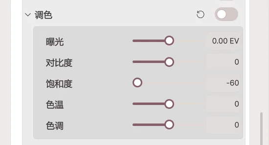
| 调整 | 画面变化 |
|---|---|
| 曝光 | 增大使全画面变亮，降低则变暗。 |
| 对比度 | 加大明暗差异。 |
| 饱和度 | 增大使色彩更鲜艳；降低则接近黑白。 |
| 色温 | 降低偏冷色，增大偏暖色。 |
| 色调 | 调整绿色与品红色之间的色偏。 |
暗角
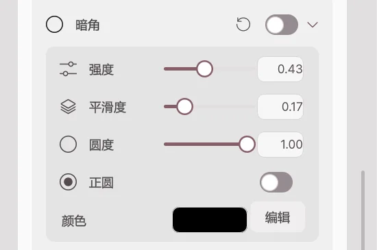
压暗画面边缘，使观众注意画面中央。
- 强度： 数值越高，四周越暗。
- 柔和度： 数值越高，暗部过渡区域越宽。
- 圆度： 改变暗角的外形。
- 颜色： 设置边缘混合的颜色。
胶片颗粒
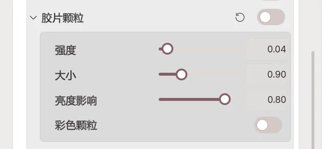
在画面中叠加类似胶片的细小颗粒。
- 强度： 增大后颗粒更明显。
- 尺寸： 增大后颗粒更大。
- 彩色颗粒： 开启后颗粒带有色彩。
色差
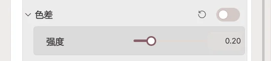
让物体轮廓边缘的红、绿、蓝三种颜色略微错位，模拟镜头色差。强度越高，颜色分离越明显。
景深
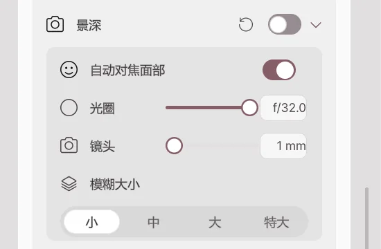
保持焦点所在的脸部清晰，并模糊前景与背景。
| 调整 | 作用 |
|---|---|
| 人脸自动对焦 | 开启后随移动中的脸部调整焦点。 |
| 对焦距离 | 关闭自动对焦后，设定清晰显示的距离。 |
| 光圈 | f 值越小，前后景模糊越强。 |
| 镜头焦距 | 焦距越长，非焦点区域越容易模糊。 |
| 模糊质量 | 提升后模糊更平滑，但增加电脑/GPU 负荷。 |
如果光圈 f 值过低或焦点距离不正确，脸部本身也会模糊。
动态模糊
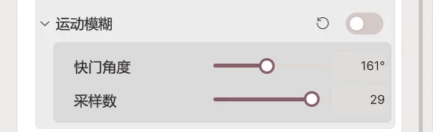
为快速运动添加拖影。
- 快门角度： 数值越高，拖影越长。
- 采样数量： 数值越高，拖影越平滑，但会增加电脑/GPU 负荷。
高级后处理效果 (Pro)
基于 Beautify 的独立摄像机效果组，在应用内显示为“后处理效果”。
颜色和色调
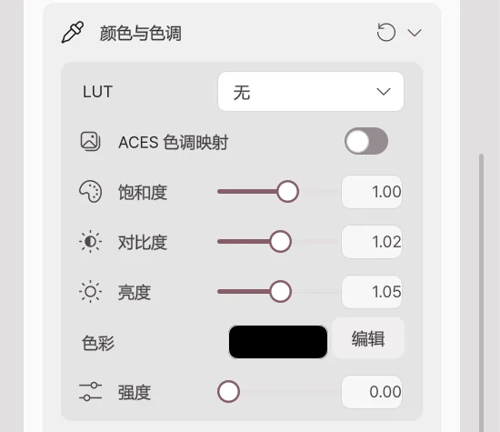
| 调整 | 作用 |
|---|---|
| LUT | 选择预设色彩风格滤镜。 |
| LUT 强度 | 增加滤镜的影响程度。 |
| ACES 色调映射 | 改变高光与暗部的表现。 |
| 饱和度 | 使颜色更鲜艳。 |
| 对比度 | 调整明暗差异。 |
| 亮度 | 改变画面整体亮度。 |
| 色彩／强度 | 向画面混入选定颜色；强度为 0 时不会显示该色彩。 |
锐化和抖动
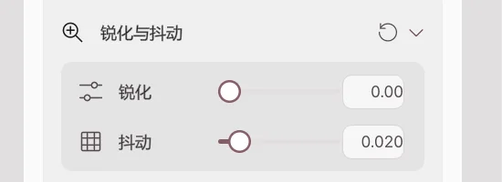
- 锐化： 使边缘更清楚。设为 0 表示关闭；过高可能产生粗糙轮廓。
- 抖动： 添加轻微噪声，减少平滑渐变中明显的色彩条带。
辉光
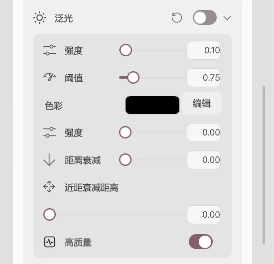
- 强度： 调整光晕的明显程度。
- 阈值： 越高则只有更亮的区域产生辉光。
- 颜色和强度： 设置光晕叠加的色调及程度。
- 距离衰减： 减少远处物体的辉光。
- 近距离衰减： 设定靠近摄像机区域的辉光减弱范围。
- 高质量： 提升效果质量，同时增加渲染负荷。
变形镜头光斑
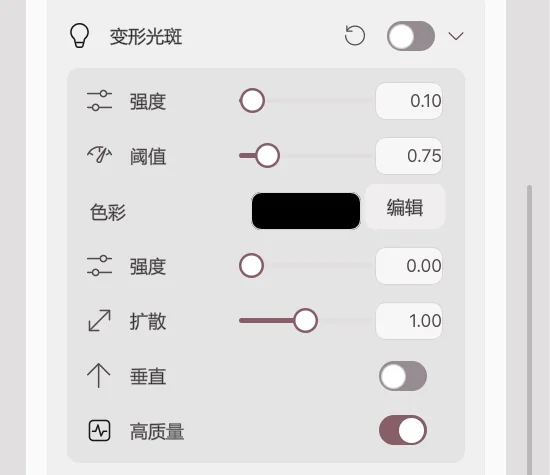
在亮部产生向两侧或上下延伸的细长光线。
- 强度： 增大后光线更明显。
- 阈值： 增大后只有更亮的部分产生光线。
- 扩散： 增加光线延伸长度。
- 垂直方向： 开启后垂直扩散，关闭后水平扩散。
- 颜色和强度： 调整光线色彩及其程度。
景深
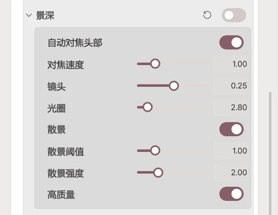
- 头部自动对焦： 随角色头部移动追踪焦点。
- 对焦距离： 关闭自动对焦后手动设定清晰距离。
- 对焦速度： 越高越快追随移动目标。
- 镜头与光圈： 控制模糊区域范围。
- 散景： 将虚化的亮点显示为光斑。
- 散景阈值： 越高则只有更亮的点成为光斑。
- 散景强度： 控制光斑亮度。
开启下面的全屏模糊后，此处的景深效果会关闭。
色差
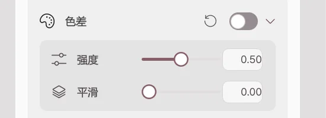
- 强度： 使轮廓的颜色错位更加明显。
- 平滑度： 让颜色分离的过渡更柔和。
使用透明背景时，此效果会关闭。
镜头污渍
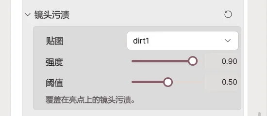
在亮部叠加镜头上的斑点和污渍。
- 纹理： 选择污渍图案；选“无”则关闭。
- 强度： 增大后污渍更加明显。
- 阈值： 污渍开始响应的亮度标准。
暗角
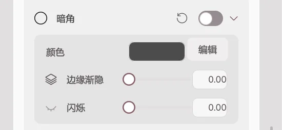
- 颜色： 画面边缘使用的颜色。
- 边缘渐隐： 调节边缘暗部的程度。
- 眨眼效果： 控制像闭眼一样遮盖屏幕的程度。
夜视
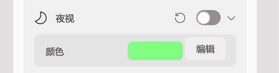
用所选颜色模拟夜视摄像机画面。打开开关后选择需要的效果颜色。
全屏模糊
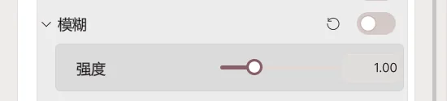
让整个画面模糊，强度越大则越模糊。若只想保持脸部清晰，请使用景深而不是全屏模糊。
像素化
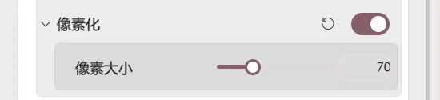
将画面变成较大的方块像素。提高像素尺寸会产生更粗糙的马赛克效果。
环境光遮蔽 (Pro)
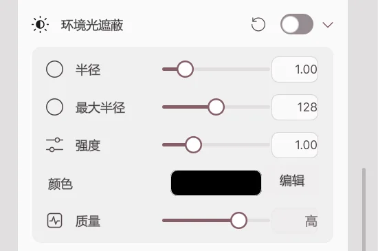
基于 HBAO，为下巴下方、衣物褶皱和房间角落等相邻表面增加接触阴影。
| 调整 | 增大后 |
|---|---|
| 半径 | 阴影影响范围变大。 |
| 最大半径 | 用于计算阴影的最大范围变大。 |
| 强度 | 阴影更加浓重。 |
| 颜色 | 改变阴影的颜色。 |
| 质量 | 阴影更平滑，但电脑/GPU 负荷增加。 |
如果眼睛或鼻子周围过暗，请降低强度或半径。
效果前后对比
以下示例使用同一角色及同一构图，只改变实际效果数值进行拍摄。


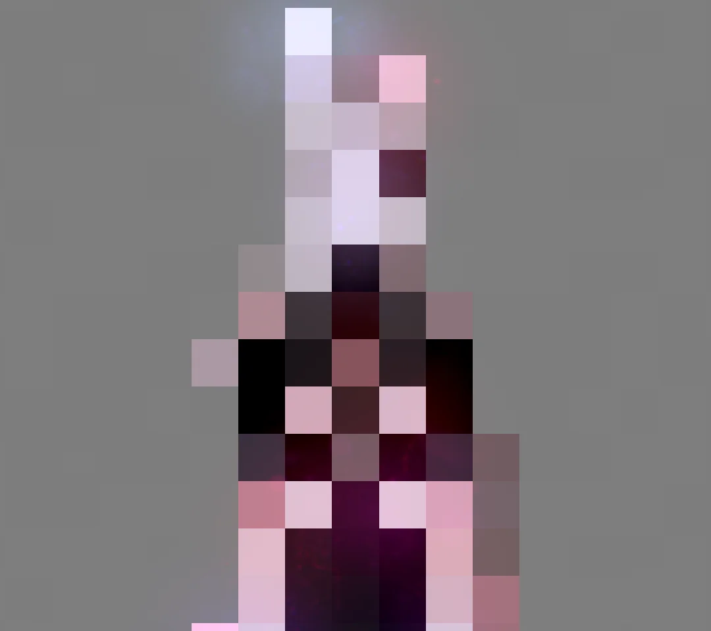